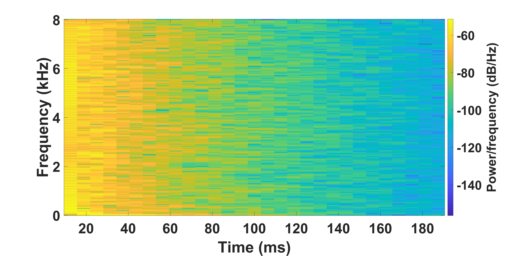
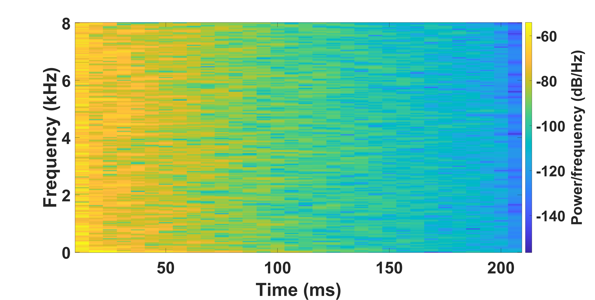
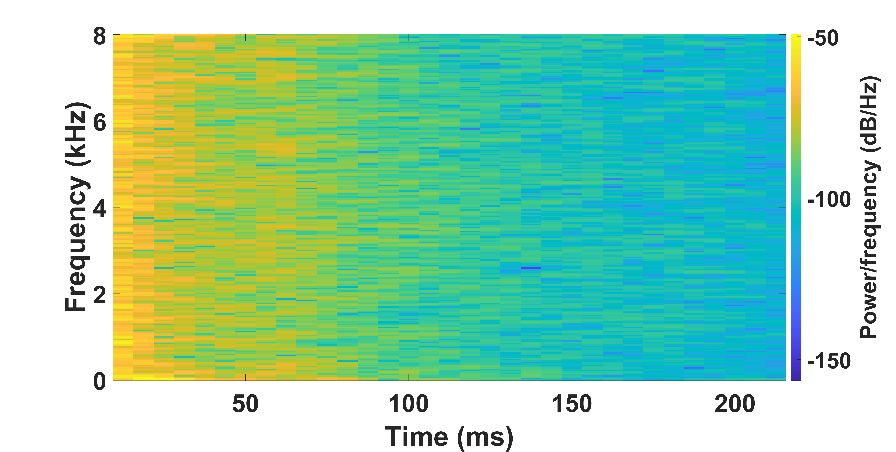
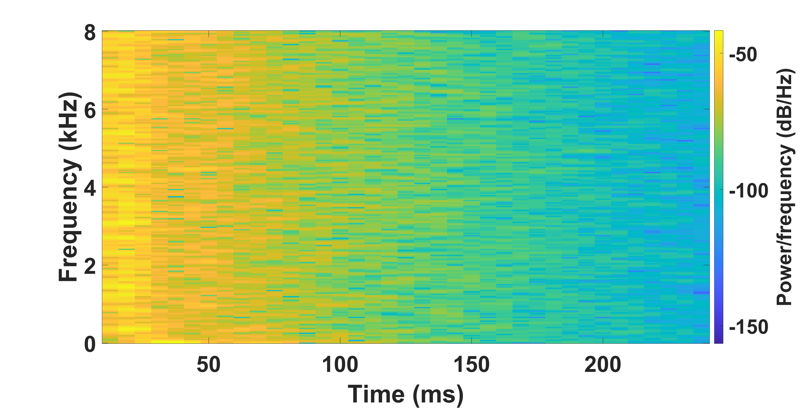
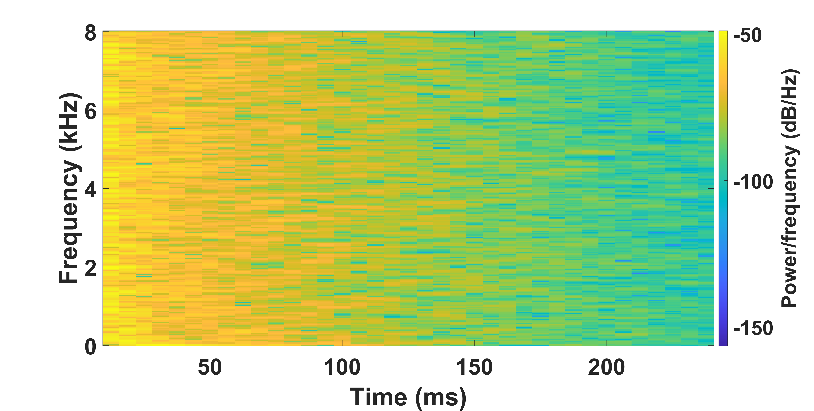
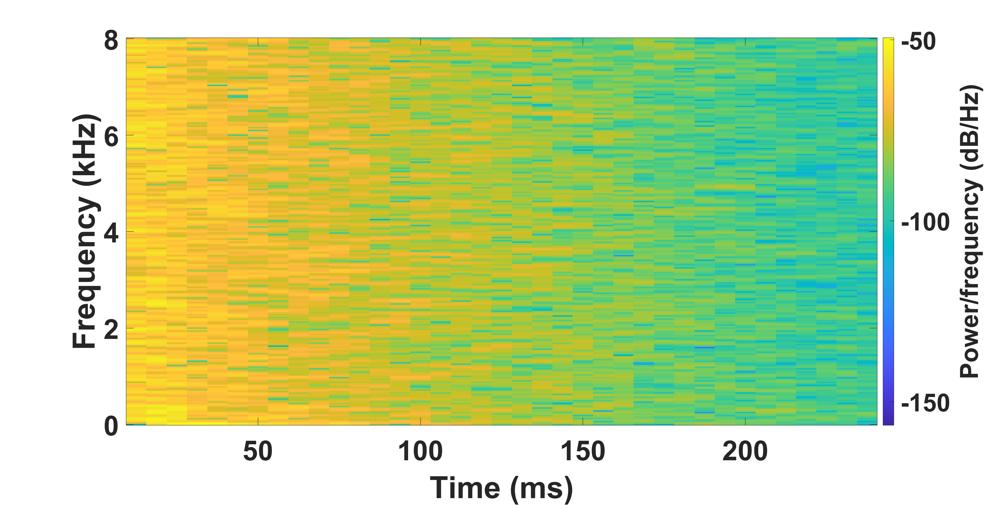
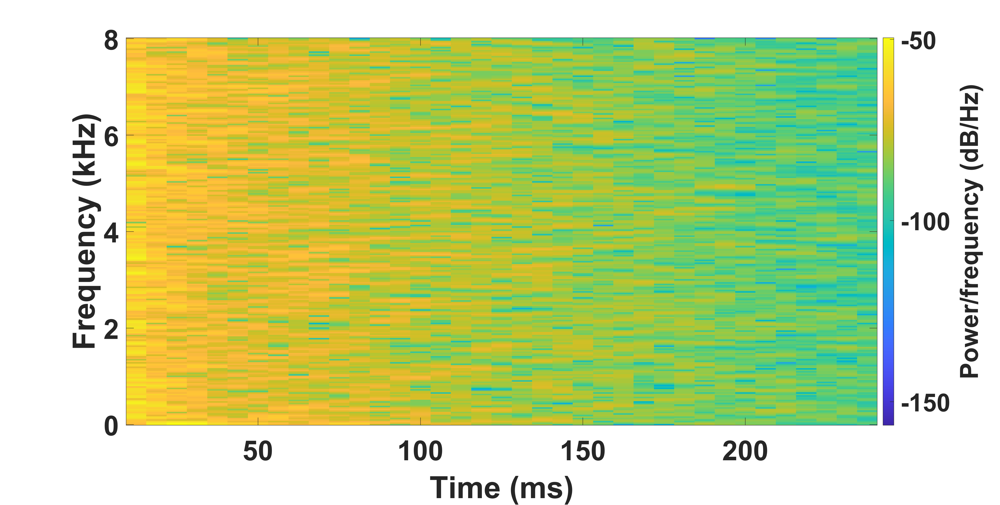
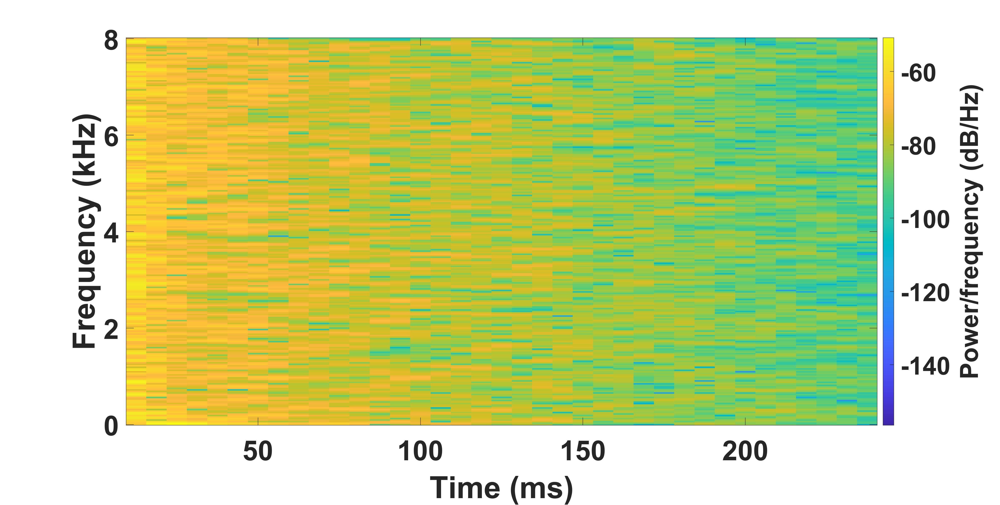
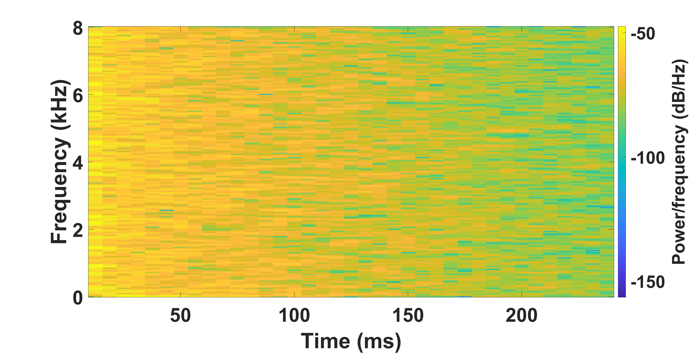
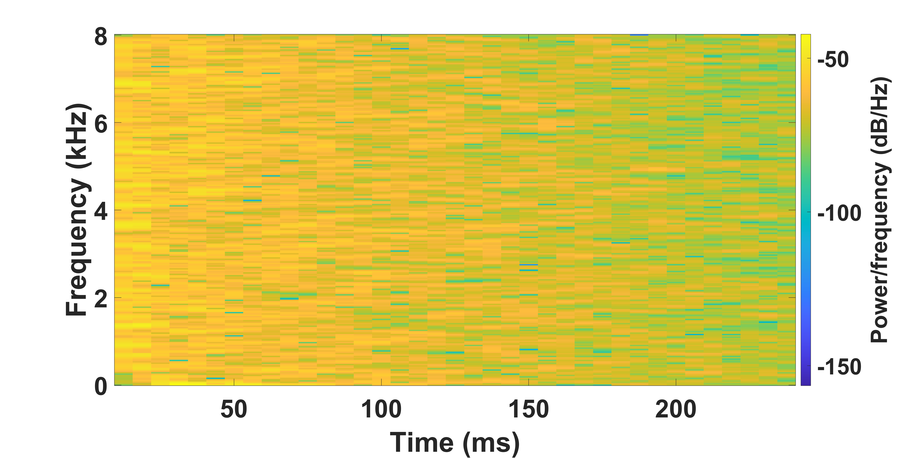

FAST-RIR: FAST NEURAL DIFFUSE ROOM IMPULSE RESPONSE GENERATOR
Abstract: We propose a neural-network-based fast diffuse room impulse response generator (FAST-RIR) for generating room impulse responses (RIRs) for a given acoustic environment. Our FAST-RIR takes room dimension, listener and speaker positions, and reverberation time (T60) as inputs and models specular and diffuse reflections for a given acoustic environment. The proposed FAST-RIR is capable of generating RIRs for a given input T60 with an average error of 0.02s. We evaluate our approach using Google Speech API, Microsoft Speech API, and Kaldi tools. We show that our proposed FAST-RIR with batch size 1 is 400 times faster than a state-of-the-art diffuse acoustic simulator (DAS) on CPU and gives similar performance to DAS in automatic speech recognition (ASR) experiments. Our FAST-RIR is 12 times faster than an existing GPU-based RIR generator gpuRIR. We show that our FAST-RIR outperforms gpuRIR by 2.5% in an AMI far-field ASR experiment.
Github
We will release our code soon !!!Audio Demos
| Room Dimension | Listener Location | Speaker Location | Reverberation Time | Clean Speech | RIR generated using DAS | Reverberant speech simulated using DAS | RIR generated using our FAST-RIR | Reverberant speech simulated using our FAST-RIR |
|---|---|---|---|---|---|---|---|---|
| [8.4m,6.4m,3.1m] | [6.12m,4.02m,2.76m] | [3.69m,3.85m,2.8m] | 0.20s | |||||
| [10m,6.4m,3.5m] | [5m,1.62m,2.56m] | [5.73m,1.32m,2.69m] | 0.23s | |||||
| [8.8m,6.0m,2.5m] | [2.31m,5.01m,1.14m] | [1.33m,0.6m,2.04m] | 0.26s | |||||
| [8.4m,7.2m,2.5m] | [3.39m,3.28m,0.42m] | [1.3m,2.23m,0.98m] | 0.38s | |||||
| [9.4m,6.2m,2.7m] | [7.58m,1.94m,0.81m] | [8.02m,1.38m,1.54m] | 0.57s | |||||
| [8m,7.8m,2.5m] | [4.19m,4.39m,0.56m] | [4.83m,6.97m,1.22m] | 0.65s | |||||
| [8.4m,6.8m,3.1m] | [8.1m,2.14m,0.86m] | [3.87m,0.92m,1.51m] | 0.68s |
Spetrogram Demos
| Room Dimension | Listener Location | Speaker Location | Reverberation Time | Spectorgram of RIR generated using DAS | Spectorgram of RIR generated using our FAST-RIR |
|---|---|---|---|---|---|
| [8.4m,6.4m,3.1m] | [6.12m,4.02m,2.76m] | [3.69m,3.85m,2.8m] | 0.20s |  |

|
| [10m,6.4m,3.5m] | [5m,1.62m,2.56m] | [5.73m,1.32m,2.69m] | 0.23s |  |  |
| [8.8m,6.0m,2.5m] | [2.31m,5.01m,1.14m] | [1.33m,0.6m,2.04m] | 0.26s |  | |
| [8.4m,7.2m,2.5m] | [3.39m,3.28m,0.42m] | [1.3m,2.23m,0.98m] | 0.38s |  |  |
| [9.4m,6.2m,2.7m] | [7.58m,1.94m,0.81m] | [8.02m,1.38m,1.54m] | 0.57s |  |  |
| [8m,7.8m,2.5m] | [4.19m,4.39m,0.56m] | [4.83m,6.97m,1.22m] | 0.65s |  | |
| [8.4m,6.8m,3.1m] | [8.1m,2.14m,0.86m] | [3.87m,0.92m,1.51m] | 0.68s |

|
 |
© October 2021